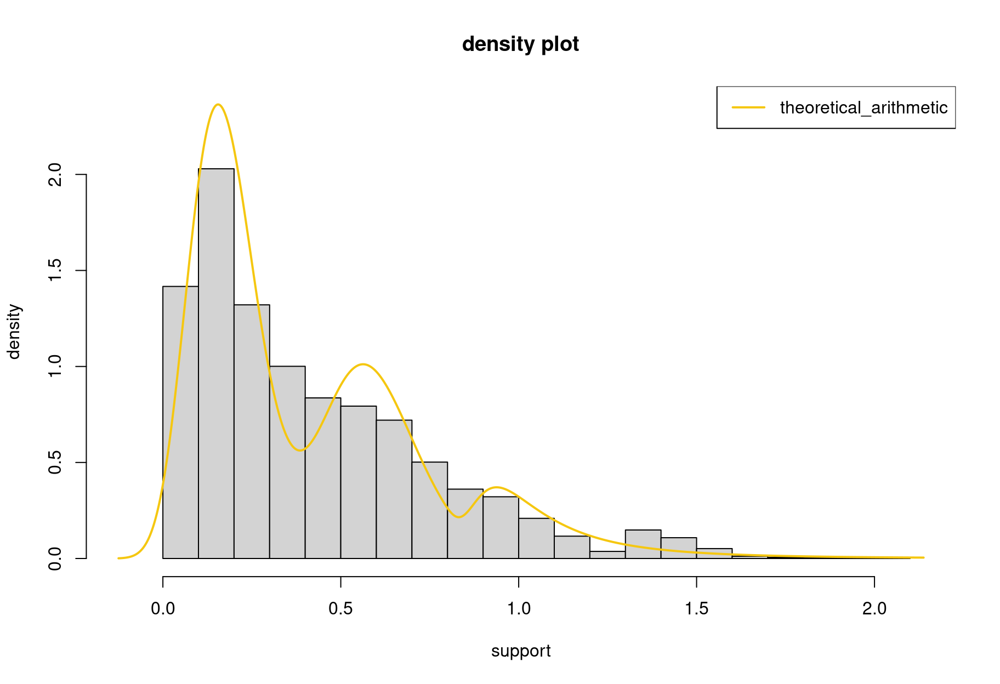
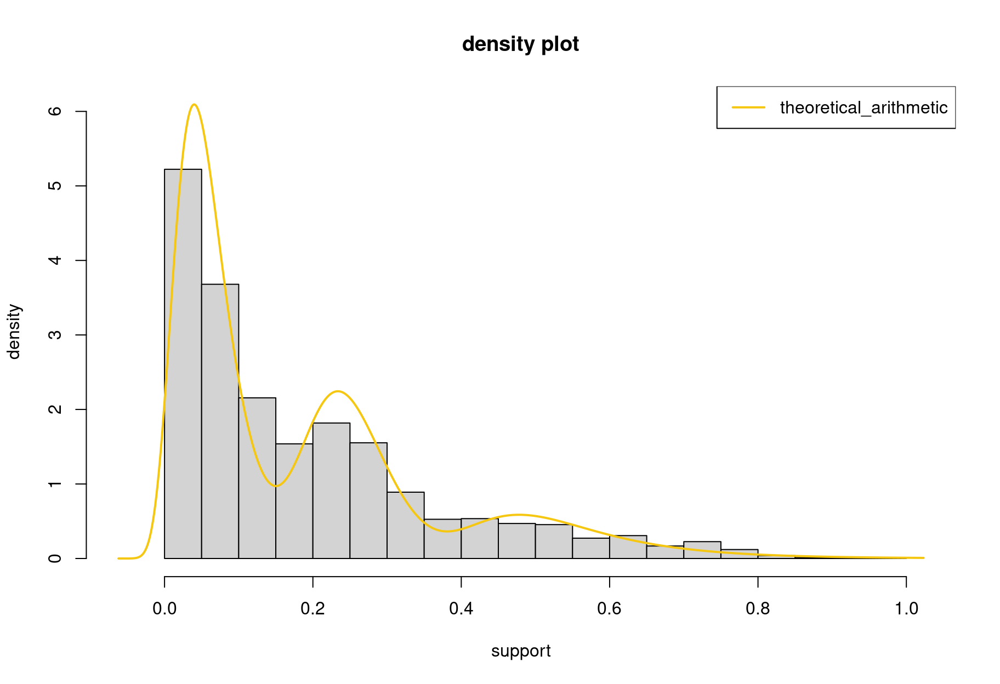
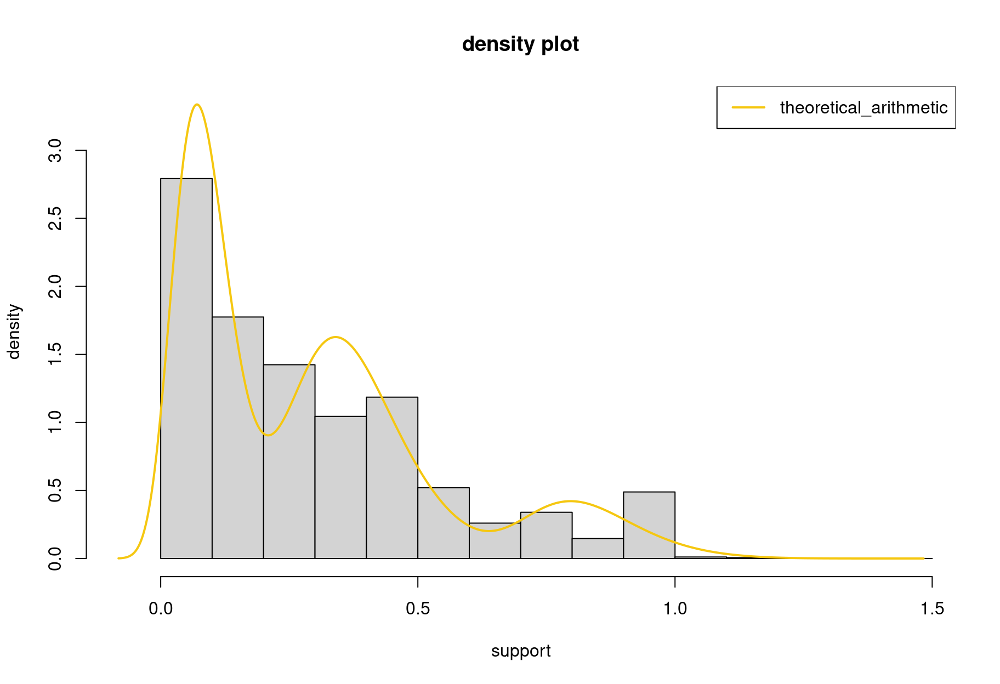
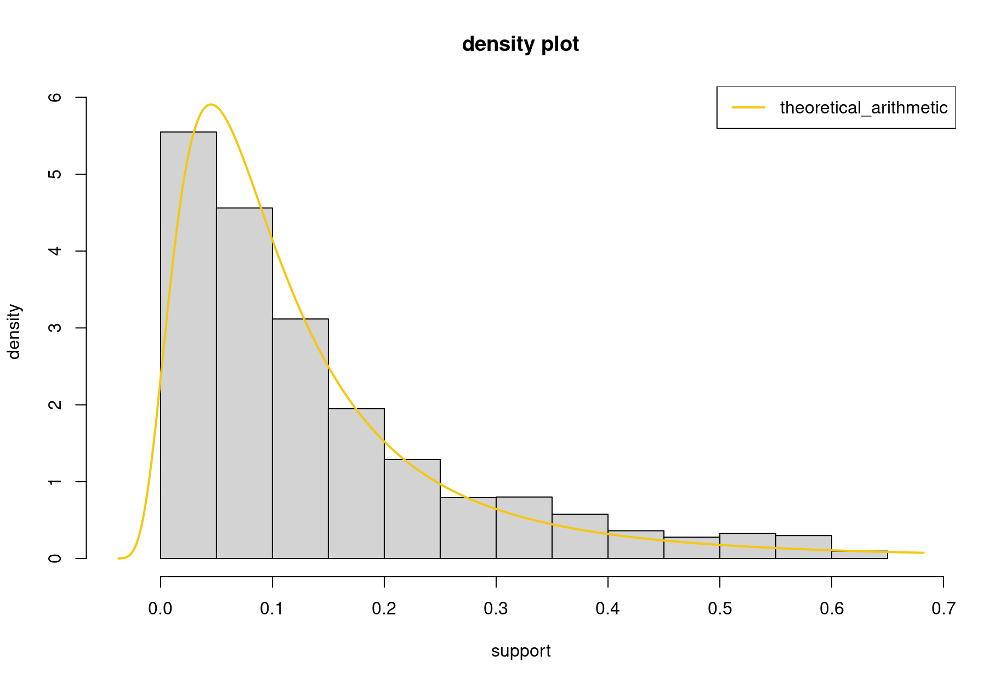
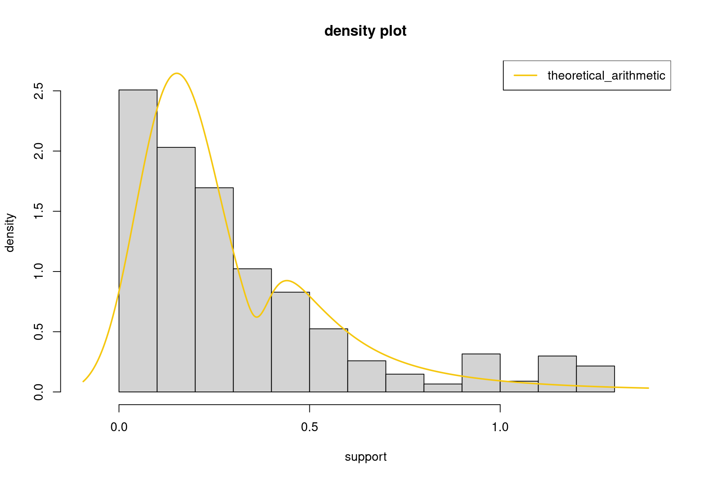
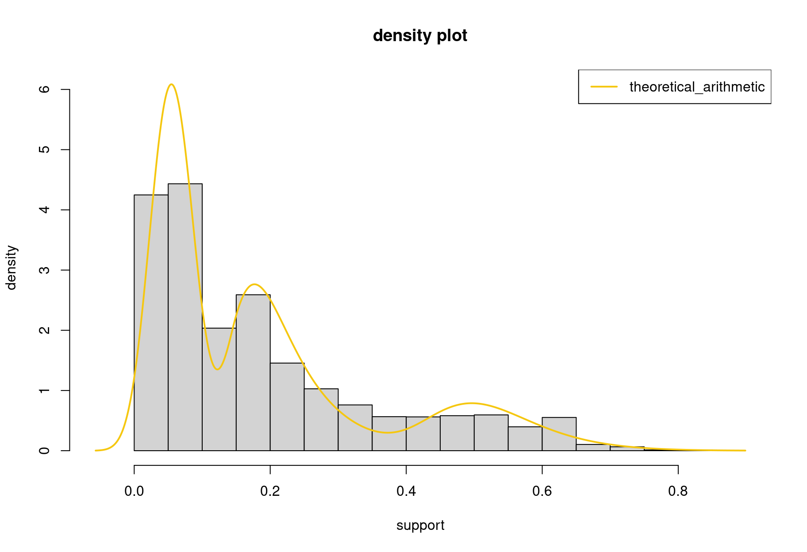
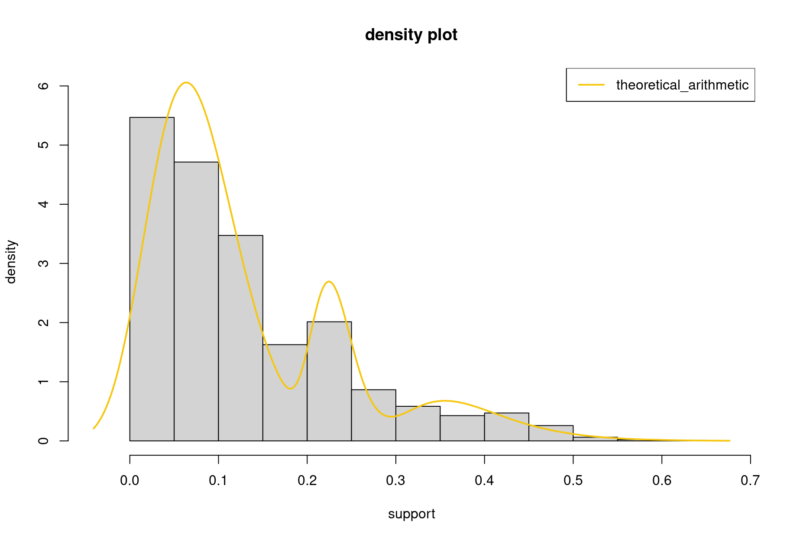

Stationary GEV Mixture Model Estimation
Mixture of non block maxima models
Modules
path <- ".."
xfun::in_dir(dir = path, expr = source("./eva_pipeline/src/read_data.R"))
xfun::in_dir(dir = path, expr = source("./eva_pipeline/src/load_functions.R"))
xfun::in_dir(dir = path, expr = source("./eva_pipeline/src/make_models.R"))
xfun::in_dir(dir = path, expr = source("./eva_pipeline/src/transform_data.R"))
xfun::in_dir(dir = path, expr = source("./eva_pipeline/src/calculate_model_aic.R"))
xfun::in_dir(dir = path, expr = source("./eva_pipeline/src/save_multiple_model_aic.R"))
xfun::in_dir(dir = path, expr = source("./eva_pipeline/src/extract_multiple_model_aic.R"))Data
experimentation_01_merged_data <- xfun::in_dir(dir = path, expr = read_data("./04_experimentation_01/merged_data.csv"))
experimentation_02_merged_data <- xfun::in_dir(dir = path, expr = read_data("./04_experimentation_02/merged_data.csv"))
experimentation_03_merged_data <- xfun::in_dir(dir = path, expr = read_data("./04_experimentation_03/merged_data.csv", nrow_skip = 14394))
experimentation_04_merged_data <- xfun::in_dir(dir = path, expr = read_data("./04_experimentation_04/merged_data.csv"))Settings-1
response_abs <- TRUE
coefficient_iqr <- 3
iterate <- 20
remove_outliers <- TRUE
scale_predictors <- TRUE
method <- c("interpolate", "mode", "median", "mean")[1]1 Experimentation 2023-10-26: 094602
1.1 lateral error
experimentation_01-processed-lateral_error
# transform data
response_var <- "lateral_error"
experimentation_01_merged_data_processed_lateral_error_object <- transform_data(
data = experimentation_01_merged_data,
response_var = response_var,
response_abs = response_abs,
scale_predictors = scale_predictors,
coefficient_iqr = coefficient_iqr,
iterate = iterate,
remove_outliers = remove_outliers,
method = method)
experimentation_01_merged_data_processed_lateral_error <- experimentation_01_merged_data_processed_lateral_error_object$responseexperimentation_01-processed-lateral_error-model-estimation
experimentation_01_merged_data_processed_lateral_error_model <- fit_stationary_evd_mixture_model(
x = experimentation_01_merged_data_processed_lateral_error,
nclusters = 3,
minimum_cluster_size = 20,
do.ci = FALSE,
confidence_level = 0.95)experimentation_01-processed-lateral_error-model-iteration
experimentation_01_merged_data_processed_lateral_error_model$iteration[1] 14experimentation_01-processed-lateral_error-model-cluster_attractors_frequencies
experimentation_01_merged_data_processed_lateral_error_model$cluster_attractors_frequencies[1] 12528 2564 7339experimentation_01-processed-lateral_error-model-cluster_attractors_weights
experimentation_01_merged_data_processed_lateral_error_model$cluster_attractors_weights[1] 0.5585127725 0.1143060942 0.3271811333experimentation_01-processed-lateral_error-model-cluster_models_coefficients
experimentation_01_merged_data_processed_lateral_error_model$cluster_models_coefficients location scale shape
[1,] 0.1372708334 0.08852618996 -0.1859856442
[2,] 0.9966029426 0.13264737910 0.4078570390
[3,] 0.5362718719 0.12167010711 -0.2018968884experimentation_01-processed-lateral_error-model-cluster_information_criteria
experimentation_01_merged_data_processed_lateral_error_model$cluster_information_criteria AIC BIC
5654.112479 5742.312670 experimentation_01-processed-lateral_error-model-diagnostic_plot
plot_fit_stationary_evd_mixture_model(
evd_mixture_model_object = experimentation_01_merged_data_processed_lateral_error_model,
nclass = NULL,
xlab = "support",
ylab = "density",
main = "density plot",
legend_position = "topright")
1.2 longitudinal error
experimentation_01-processed-longitudinal_error
# transform data
response_var <- "longitudinal_error"
experimentation_01_merged_data_processed_longitudinal_error_object <- transform_data(
data = experimentation_01_merged_data,
response_var = response_var,
response_abs = response_abs,
scale_predictors = scale_predictors,
coefficient_iqr = coefficient_iqr,
iterate = iterate,
remove_outliers = remove_outliers,
method = method)
experimentation_01_merged_data_processed_longitudinal_error <- experimentation_01_merged_data_processed_longitudinal_error_object$responseexperimentation_01-processed-longitudinal_error-model-estimation
experimentation_01_merged_data_processed_longitudinal_error_model <- fit_stationary_evd_mixture_model(
x = experimentation_01_merged_data_processed_longitudinal_error,
nclusters = 3,
minimum_cluster_size = 20,
do.ci = FALSE,
confidence_level = 0.95)experimentation_01-processed-longitudinal_error-model-iteration
experimentation_01_merged_data_processed_longitudinal_error_model$iteration[1] 25experimentation_01-processed-longitudinal_error-model-cluster_attractors_frequencies
experimentation_01_merged_data_processed_longitudinal_error_model$cluster_attractors_frequencies[1] 6694 3168 12788experimentation_01-processed-longitudinal_error-model-cluster_attractors_weights
experimentation_01_merged_data_processed_longitudinal_error_model$cluster_attractors_weights[1] 0.2955408389 0.1398675497 0.5645916115experimentation_01-processed-longitudinal_error-model-cluster_models_coefficients
experimentation_01_merged_data_processed_longitudinal_error_model$cluster_models_coefficients location scale shape
[1,] 0.22799686249 0.05023458020 -0.145305656125
[2,] 0.48767177108 0.08847851279 0.088420404365
[3,] 0.04003489278 0.03408724636 0.002477723045experimentation_01-processed-longitudinal_error-model-cluster_information_criteria
experimentation_01_merged_data_processed_longitudinal_error_model$cluster_information_criteria AIC BIC
-29552.66403 -29464.35696 experimentation_01-processed-longitudinal_error-model-diagnostic_plot
plot_fit_stationary_evd_mixture_model(
evd_mixture_model_object = experimentation_01_merged_data_processed_longitudinal_error_model,
nclass = NULL,
display_all = FALSE,
xlab = "support",
ylab = "density",
main = "density plot",
legend_position = "topright")
2 Experimentation 2023-12-11: 165719
2.1 lateral error
experimentation_02-processed-lateral_error
# transform data
response_var <- "lateral_error"
experimentation_02_merged_data_processed_lateral_error_object <- transform_data(
data = experimentation_02_merged_data,
response_var = response_var,
response_abs = response_abs,
scale_predictors = scale_predictors,
coefficient_iqr = coefficient_iqr,
iterate = iterate,
remove_outliers = remove_outliers,
method = method)
experimentation_02_merged_data_processed_lateral_error <- experimentation_02_merged_data_processed_lateral_error_object$responseexperimentation_02-processed-lateral_error-model-estimation
experimentation_02_merged_data_processed_lateral_error_model <- fit_stationary_evd_mixture_model(
x = experimentation_02_merged_data_processed_lateral_error,
nclusters = 3,
minimum_cluster_size = 20,
do.ci = FALSE,
confidence_level = 0.95)experimentation_02-processed-lateral_error-model-iteration
experimentation_02_merged_data_processed_lateral_error_model$iteration[1] 20experimentation_02-processed-lateral_error-model-cluster_attractors_frequencies
experimentation_02_merged_data_processed_lateral_error_model$cluster_attractors_frequencies[1] 3871 14822 16163experimentation_02-processed-lateral_error-model-cluster_attractors_weights
experimentation_02_merged_data_processed_lateral_error_model$cluster_attractors_weights[1] 0.1110569199 0.4252352536 0.4637078265experimentation_02-processed-lateral_error-model-cluster_models_coefficients
experimentation_02_merged_data_processed_lateral_error_model$cluster_models_coefficients location scale shape
[1,] 0.78821670707 0.09990666953 -0.1291079128
[2,] 0.32970175278 0.09689895576 -0.1115951228
[3,] 0.06323161438 0.05159885188 -0.1318413500experimentation_02-processed-lateral_error-model-cluster_information_criteria
experimentation_02_merged_data_processed_lateral_error_model$cluster_information_criteria AIC BIC
-14318.09664 -14225.04786 experimentation_02-processed-lateral_error-model-diagnostic_plot
plot_fit_stationary_evd_mixture_model(
evd_mixture_model_object = experimentation_02_merged_data_processed_lateral_error_model,
nclass = NULL,
display_all = FALSE,
xlab = "support",
ylab = "density",
main = "density plot",
legend_position = "topright")
2.2 longitudinal error
experimentation_02-processed-longitudinal_error
# transform data
response_var <- "longitudinal_error"
experimentation_02_merged_data_processed_longitudinal_error_object <- transform_data(
data = experimentation_02_merged_data,
response_var = response_var,
response_abs = response_abs,
scale_predictors = scale_predictors,
coefficient_iqr = coefficient_iqr,
iterate = iterate,
remove_outliers = remove_outliers,
method = method)
experimentation_02_merged_data_processed_longitudinal_error <- experimentation_02_merged_data_processed_longitudinal_error_object$responseexperimentation_02-processed-longitudinal_error-model-estimation
experimentation_02_merged_data_processed_longitudinal_error_model <- fit_stationary_evd_mixture_model(
x = experimentation_02_merged_data_processed_longitudinal_error,
nclusters = 1,
minimum_cluster_size = 20,
do.ci = FALSE,
confidence_level = 0.95)experimentation_02-processed-longitudinal_error-model-iteration
experimentation_02_merged_data_processed_longitudinal_error_model$iteration[1] 1experimentation_02-processed-longitudinal_error-model-cluster_attractors_frequencies
experimentation_02_merged_data_processed_longitudinal_error_model$cluster_attractors_frequencies[1] 33801experimentation_02-processed-longitudinal_error-model-cluster_attractors_weights
experimentation_02_merged_data_processed_longitudinal_error_model$cluster_attractors_weights[1] 1experimentation_02-processed-longitudinal_error-model-cluster_models_coefficients
experimentation_02_merged_data_processed_longitudinal_error_model$cluster_models_coefficients location scale shape
[1,] 0.06783928142 0.06776589042 0.4385282855experimentation_02-processed-longitudinal_error-model-cluster_information_criteria
experimentation_02_merged_data_processed_longitudinal_error_model$cluster_information_criteria AIC BIC
-58782.75605 -58757.47132 experimentation_02-processed-longitudinal_error-model-diagnostic_plot
plot_fit_stationary_evd_mixture_model(
evd_mixture_model_object = experimentation_02_merged_data_processed_longitudinal_error_model,
nclass = NULL,
display_all = FALSE,
xlab = "support",
ylab = "density",
main = "density plot",
legend_position = "topright")
3 Experimentation 2023-12-12: 101549
3.1 lateral error
experimentation_03-processed-lateral_error
# transform data
response_var <- "lateral_error"
experimentation_03_merged_data_processed_lateral_error_object <- transform_data(
data = experimentation_03_merged_data,
response_var = response_var,
response_abs = response_abs,
scale_predictors = scale_predictors,
coefficient_iqr = coefficient_iqr,
iterate = iterate,
remove_outliers = remove_outliers,
method = method)
experimentation_03_merged_data_processed_lateral_error <- experimentation_03_merged_data_processed_lateral_error_object$responseexperimentation_03-processed-lateral_error-model-estimation
experimentation_03_merged_data_processed_lateral_error_model <- fit_stationary_evd_mixture_model(
x = experimentation_03_merged_data_processed_lateral_error,
nclusters = 2,
minimum_cluster_size = 20,
do.ci = FALSE,
confidence_level = 0.95)experimentation_03-processed-lateral_error-model-iteration
experimentation_03_merged_data_processed_lateral_error_model$iteration[1] 8experimentation_03-processed-lateral_error-model-cluster_attractors_frequencies
experimentation_03_merged_data_processed_lateral_error_model$cluster_attractors_frequencies[1] 4907 12077experimentation_03-processed-lateral_error-model-cluster_attractors_weights
experimentation_03_merged_data_processed_lateral_error_model$cluster_attractors_weights[1] 0.2889189826 0.7110810174experimentation_03-processed-lateral_error-model-cluster_models_coefficients
experimentation_03_merged_data_processed_lateral_error_model$cluster_models_coefficients location scale shape
[1,] 0.5205129027 0.1466617077 0.6038350256
[2,] 0.1254173304 0.1018269297 -0.2324739309experimentation_03-processed-lateral_error-model-cluster_information_criteria
experimentation_03_merged_data_processed_lateral_error_model$cluster_information_criteria AIC BIC
-630.3201260 -576.1399369 experimentation_03-processed-lateral_error-model-diagnostic_plot
plot_fit_stationary_evd_mixture_model(
evd_mixture_model_object = experimentation_03_merged_data_processed_lateral_error_model,
nclass = NULL,
display_all = FALSE,
xlab = "support",
ylab = "density",
main = "density plot",
legend_position = "topright")
3.2 longitudinal error
experimentation_03-processed-longitudinal_error
# transform data
response_var <- "longitudinal_error"
experimentation_03_merged_data_processed_longitudinal_error_object <- transform_data(
data = experimentation_03_merged_data,
response_var = response_var,
response_abs = response_abs,
scale_predictors = scale_predictors,
coefficient_iqr = coefficient_iqr,
iterate = iterate,
remove_outliers = remove_outliers,
method = method)
experimentation_03_merged_data_processed_longitudinal_error <- experimentation_03_merged_data_processed_longitudinal_error_object$responseexperimentation_03-processed-longitudinal_error-model-estimation
experimentation_03_merged_data_processed_longitudinal_error_model <- fit_stationary_evd_mixture_model(
x = experimentation_03_merged_data_processed_longitudinal_error,
nclusters = 3,
minimum_cluster_size = 20,
do.ci = FALSE,
confidence_level = 0.95)experimentation_03-processed-longitudinal_error-model-iteration
experimentation_03_merged_data_processed_longitudinal_error_model$iteration[1] 21experimentation_03-processed-longitudinal_error-model-cluster_attractors_frequencies
experimentation_03_merged_data_processed_longitudinal_error_model$cluster_attractors_frequencies[1] 7446 6017 2313experimentation_03-processed-longitudinal_error-model-cluster_attractors_weights
experimentation_03_merged_data_processed_longitudinal_error_model$cluster_attractors_weights[1] 0.4719827586 0.3814021298 0.1466151116experimentation_03-processed-longitudinal_error-model-cluster_models_coefficients
experimentation_03_merged_data_processed_longitudinal_error_model$cluster_models_coefficients location scale shape
[1,] 0.04464200323 0.02998894560 -0.29874861264
[2,] 0.18265776438 0.05112215497 0.12109298539
[3,] 0.49393860780 0.07246284216 -0.08369236535experimentation_03-processed-longitudinal_error-model-cluster_information_criteria
experimentation_03_merged_data_processed_longitudinal_error_model$cluster_information_criteria AIC BIC
-21649.26289 -21564.93419 experimentation_03-processed-longitudinal_error-model-diagnostic_plot
plot_fit_stationary_evd_mixture_model(
evd_mixture_model_object = experimentation_03_merged_data_processed_longitudinal_error_model,
nclass = NULL,
display_all = FALSE,
xlab = "support",
ylab = "density",
main = "density plot",
legend_position = "topright")
4 Experimentation 2023-12-12: 104522
4.1 lateral error
experimentation_04-processed-lateral_error
# transform data
response_var <- "lateral_error"
experimentation_04_merged_data_processed_lateral_error_object <- transform_data(
data = experimentation_04_merged_data,
response_var = response_var,
response_abs = response_abs,
scale_predictors = scale_predictors,
coefficient_iqr = coefficient_iqr,
iterate = iterate,
remove_outliers = remove_outliers,
method = method)
experimentation_04_merged_data_processed_lateral_error <- experimentation_04_merged_data_processed_lateral_error_object$responseexperimentation_04-processed-lateral_error-model-estimation
experimentation_04_merged_data_processed_lateral_error_model <- fit_stationary_evd_mixture_model(
x = experimentation_04_merged_data_processed_lateral_error,
nclusters = 3,
minimum_cluster_size = 20,
do.ci = FALSE,
confidence_level = 0.95)experimentation_04-processed-lateral_error-model-iteration
experimentation_04_merged_data_processed_lateral_error_model$iteration[1] 27experimentation_04-processed-lateral_error-model-cluster_attractors_frequencies
experimentation_04_merged_data_processed_lateral_error_model$cluster_attractors_frequencies[1] 4875 3887 11823experimentation_04-processed-lateral_error-model-cluster_attractors_weights
experimentation_04_merged_data_processed_lateral_error_model$cluster_attractors_weights[1] 0.2368229293 0.1888268156 0.5743502550experimentation_04-processed-lateral_error-model-cluster_models_coefficients
experimentation_04_merged_data_processed_lateral_error_model$cluster_models_coefficients location scale shape
[1,] 0.3640576186 0.05360263473 0.04990906621
[2,] 0.6866215463 0.08704784780 0.19850743291
[3,] 0.1093607837 0.08187298185 -0.33426819186experimentation_04-processed-lateral_error-model-cluster_information_criteria
experimentation_04_merged_data_processed_lateral_error_model$cluster_information_criteria AIC BIC
-5824.220347 -5736.964850 experimentation_04-processed-lateral_error-model-diagnostic_plot
plot_fit_stationary_evd_mixture_model(
evd_mixture_model_object = experimentation_04_merged_data_processed_lateral_error_model,
nclass = NULL,
display_all = FALSE,
xlab = "support",
ylab = "density",
main = "density plot",
legend_position = "topright")
4.2 longitudinal error
experimentation_04-processed-longitudinal_error
# transform data
response_var <- "longitudinal_error"
experimentation_04_merged_data_processed_longitudinal_error_object <- transform_data(
data = experimentation_04_merged_data,
response_var = response_var,
response_abs = response_abs,
scale_predictors = scale_predictors,
coefficient_iqr = coefficient_iqr,
iterate = iterate,
remove_outliers = remove_outliers,
method = method)
experimentation_04_merged_data_processed_longitudinal_error <- experimentation_04_merged_data_processed_longitudinal_error_object$responseexperimentation_04-processed-longitudinal_error-model-estimation
experimentation_04_merged_data_processed_longitudinal_error_model <- fit_stationary_evd_mixture_model(
x = experimentation_04_merged_data_processed_longitudinal_error,
nclusters = 3,
minimum_cluster_size = 20,
do.ci = FALSE,
confidence_level = 0.95)experimentation_04-processed-longitudinal_error-model-iteration
experimentation_04_merged_data_processed_longitudinal_error_model$iteration[1] 28experimentation_04-processed-longitudinal_error-model-cluster_attractors_frequencies
experimentation_04_merged_data_processed_longitudinal_error_model$cluster_attractors_frequencies[1] 15744 3149 2149experimentation_04-processed-longitudinal_error-model-cluster_attractors_weights
experimentation_04_merged_data_processed_longitudinal_error_model$cluster_attractors_weights[1] 0.7482178500 0.1496530748 0.1021290752experimentation_04-processed-longitudinal_error-model-cluster_models_coefficients
experimentation_04_merged_data_processed_longitudinal_error_model$cluster_models_coefficients location scale shape
[1,] 0.05460594125 0.04622305208 -0.18029637976
[2,] 0.22172308001 0.02166592220 -0.17057266833
[3,] 0.35294242164 0.05545510900 -0.04179172313experimentation_04-processed-longitudinal_error-model-cluster_information_criteria
experimentation_04_merged_data_processed_longitudinal_error_model$cluster_information_criteria AIC BIC
-40774.36817 -40686.87114 experimentation_04-processed-longitudinal_error-model-diagnostic_plot
plot_fit_stationary_evd_mixture_model(
evd_mixture_model_object = experimentation_04_merged_data_processed_longitudinal_error_model,
nclass = NULL,
display_all = FALSE,
xlab = "support",
ylab = "density",
main = "density plot",
legend_position = "topright")